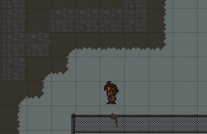

<div class="loaded-content">
	
	<p style="display:inline-block;width:48%;padding:0px 10px;vertical-align:top;">
		Notice how the character cuts corners!<br>
		He does not move exactly on the grid.
		He can also change direction at any point
		and does not wait for his step to finish (which is usual in many games).<br>
		This is not done with any fancy coding techniques.
		It was simply fine-tuned until it felt you had good control of your character.
	</p>
</div>
